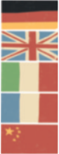

Nous apprenons des langues
2 Pourquoi Greta veut-elle apprendre des langues ? Coche la bonne case.
3 Quelle langue parle-t-on dans chaque pays ? Complète.

En Allemagne
En Angleterre
En Italie
En France
En Chine
4 Que répond Greta à la fin du dialogue ? Recopie-le.
Fais des recherches et réponds aux questions.
Que signifie cette expression ?
En quelle langue ?
5 Aimerais-tu apprendre beaucoup de langues ? Explique pourquoi.